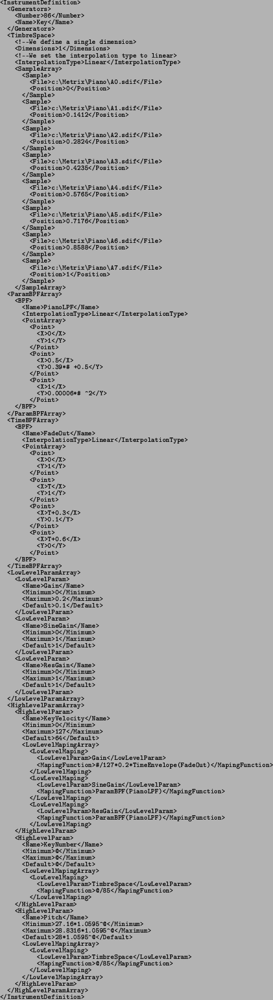
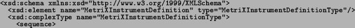
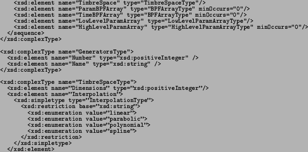

Next: MetriXML Score Definition Up: MetriX in XML= MetriXML Previous: MetriX in XML= MetriXML
By looking at the MIDL example in section 6.4.2 we can derive
the following XML example of a MetriXML Instrument Definition document.
Note that because of the structure of the CLAM ProcessingConfig class
and some limitations of the automatic XML facilities in the framework
we will not use XML attributes and declare everything as elements.
We will also avoid some constructions like lists and the XML
inheritance mechanism.
And from the previous example we can extract the associated XML-Schema
that will then be directly mapeable to the class structure.

<xsd:element name="Generators" type="GeneratorsType"/>

<xsd:element name=''SampleArray''>

Finally, and by looking at the previous XML-Schema, it is immediate to derive the Object-Oriented model illustrated in the class diagram in Figure 6.12.
Note that this class diagram turns out to be an extension/refinement of the MetriX model previously illustrated in figure 6.10.
2004-10-18